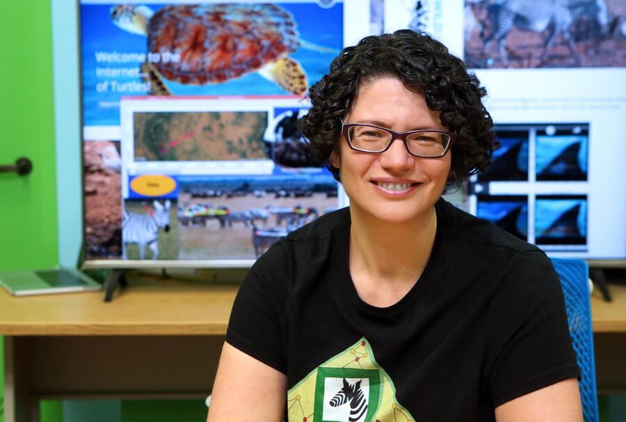

Saving and preserving animal species with AI
Artificial intelligence is helping scientists see the natural world in ways never before possible. In this episode, Ohio State’s Tanya Berger-Wolf explains how Imageomics — a new field at the intersection of AI and biology — is revealing hidden patterns in nature’s images, helping researchers better understand animal behavior and protect Earth’s biodiversity before it’s too late.
Link: https://www.osu.edu/impact/now-at-ohio-state/imageomics